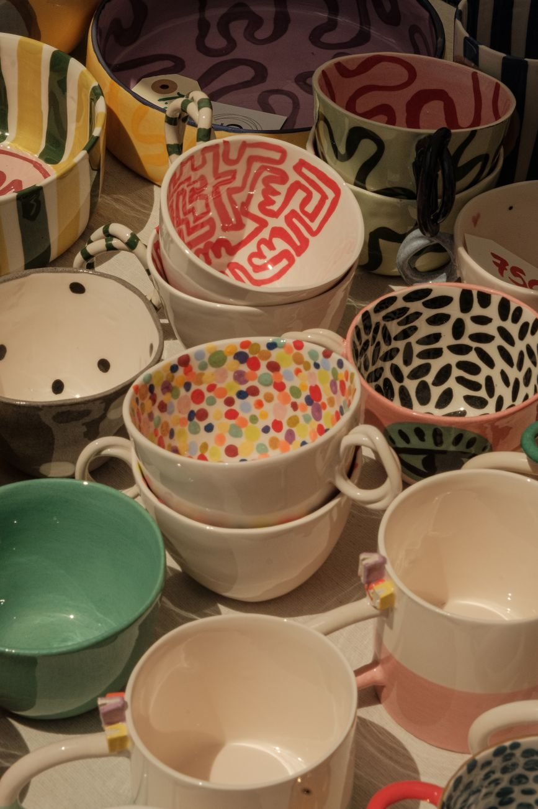
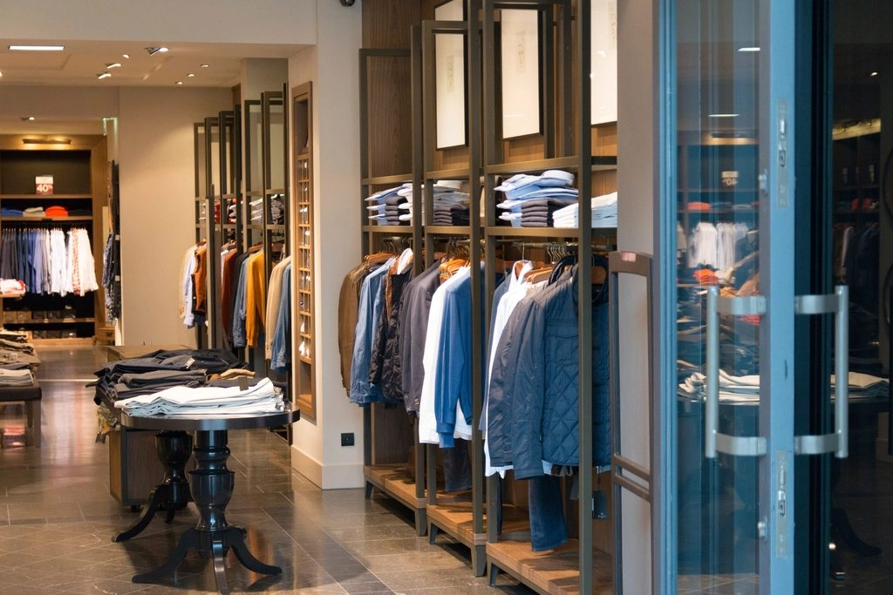

The gallery
A look inside Juniper Home.
Handmade pieces from Southwestern makers we know, and the little shop on Canyon Road where they find a home.


The shelves change as new pieces come in — the best way to see what's here is to stop by. Call ahead and we'll set something aside.